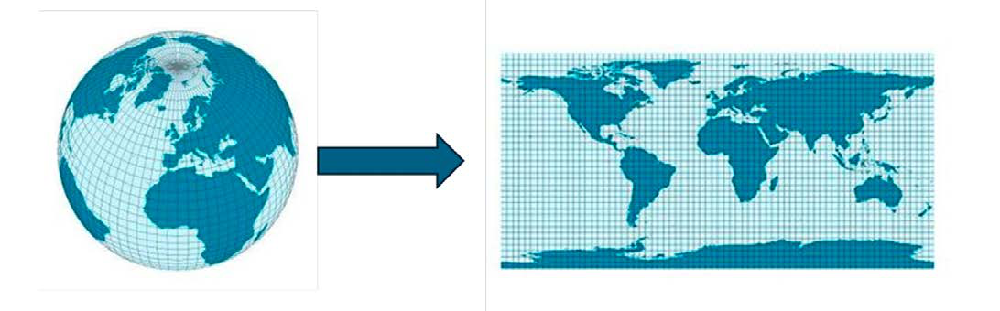
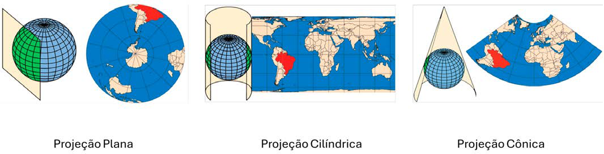
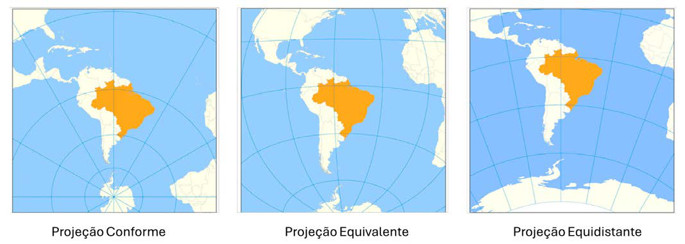
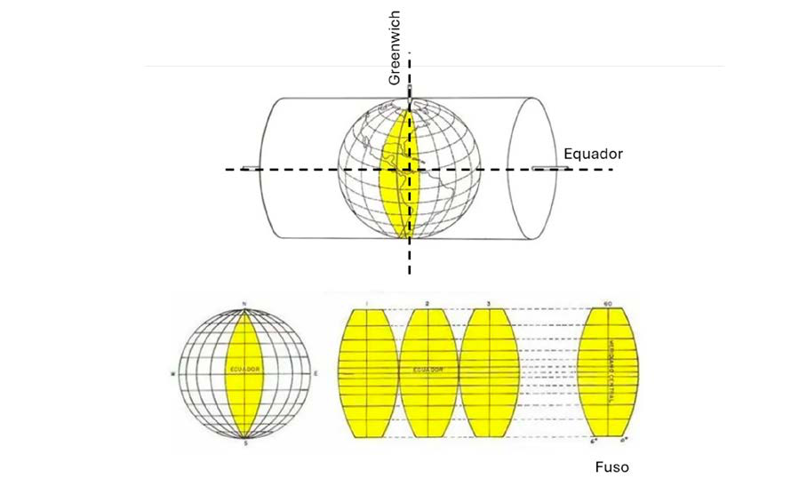
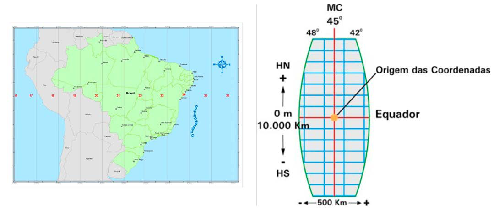

Módulo 3 | Aula 3
Fundamentos da Cartografia
Projeções cartográficas
Como vimos na seção anterior, as formas terrestres e suas localizações são usualmente trabalhadas na sua representação bidimensional plana e associado a um sistema de coordenadas específicos. O processo de transformação da dimensão tridimensional da terra para dimensões planas é chamado de projeção cartográfica.
Um sistema de projeção cartográfica é “qualquer representação sistemática de paralelos e meridianos retratando a superfície da Terra ou parte dela, considerada como esfera ou elipsoide, sobre um plano referencial.” (SNYDER, 1987).
Figura 5: Projeção cartográfica

Fonte: Adaptada pelo autor de https://commons.wikimedia.org/
Como essa transformação não pode ocorrer sem a introdução de distorções, torna-se necessário selecionar quais propriedades — como área, forma, distância ou direção — serão preservadas, implicando a perda parcial de outras. Em representações de grande extensão territorial, as distorções tornam-se mais evidentes, enquanto em áreas reduzidas podem ser minimizadas dependendo da projeção adotada. Embora exista um número infinito de projeções possíveis, apenas algumas centenas foram formalmente desenvolvidas e publicadas, muitas das quais possuem uso limitado. Além disso, a maioria das projeções pode ser modificada ao se alterar o ponto central ou o ponto de origem na superfície terrestre, ampliando ainda mais suas variações (SNYDER, 1987).
As projeções cartográficas são classificadas, principalmente, quanto à superfície de projeção e às propriedades.
Quanto à superfície de projeção: Podem ser projeções planas, cônicas ou cilíndricas, quando forem utilizadas as superfícies de um plano, cone ou cilindro como base para planificar a esfera terrestre (IBGE, 2026).
Figura 6: Superfícies de projeção

Fonte: Adaptada pelo autor de Atlas Escolar IBGE.
As superfícies de projeção podem ser polares (tangentes ao polo), equatoriais (tangentes ao Equador) ou oblíquas (tangentes a qualquer ponto da Terra). Na planificação da superfície terrestre ocorrem deformações, podendo preservar apenas ângulos (conforme), áreas (equivalente) ou distâncias (equidistante). Projeções como Mercator, Miller, Behrmann e Robinson representam o mundo. No Brasil, destacam-se as projeções Mercator e policônica, sendo esta utilizada no mapeamento oficial em escala geográfica e a cônica conforme de Lambert na escala 1:1.000.000.
Figura 7: Tipos de preservações de distorções de projeção.

Fonte: Adaptada pelo autor de Atlas Escolar IBGE.
Projeção Universal Transversa de Mercator (UTM)
É um sistema de coordenadas cartesianas e métricas utilizado para mapear a superfície terrestre com alta precisão em escala local. Diferente das coordenadas geográficas (latitude e longitude), que usam graus, a UTM utiliza metros. Trata-se de uma projeção cilíndrica e conforme, mantém a forma das pequenas áreas e os ângulos, sendo ideal para engenharia e topografia. Onde o cilindro é transverso, onde o eixo do cilindro está no eixo do Equador e tangente ao meridiano (FITZ, 2008).
Figura 8: Projeção UTM.

Fonte: Adaptado de Manual Técnico de geodésia, IBGE, 1999.
O planeta Terra é dividido em 60 faixas verticais chamadas fusos, cada uma com 6 graus de largura em longitude. Esses fusos são numerados de 1 a 60, começando no meridiano de 180° Oeste e seguindo em direção ao Leste. Cada fuso possui um meridiano central, que fica bem no meio da faixa e serve como referência para projetar o mapa com menor distorção (IBGE, 2015).
O sistema UTM utiliza uma grade retangular para localizar pontos na superfície terrestre. Um dos eixos dessa grade acompanha o meridiano central, apontando para o Norte, enquanto o outro segue a linha do Equador, na direção Leste-Oeste. Com isso, cada ponto da Terra pode ser identificado por três informações: a zona UTM, a coordenada Leste (E) e a coordenada Norte (N) (IBGE, 2015).
Essa projeção apresenta pequenas distorções de escala. No meridiano central, a escala é praticamente perfeita, com fator igual a 1. Já nas bordas do fuso, esse fator pode chegar a aproximadamente 1,0015. Para reduzir essas distorções, o sistema adota um fator de escala de 0,9996 no meridiano central, fazendo com que o cilindro de projeção corte a Terra em vez de apenas tocá-la. Isso ajuda a manter a precisão da escala ao longo de todo o fuso (IBGE, 2015).
Cada fuso possui seu próprio sistema de coordenadas. No Equador, a coordenada Leste começa em 500.000 metros. Já a coordenada Norte começa em 0 metros no hemisfério norte e em 10.000.000 metros no hemisfério sul. Essa convenção evita que apareçam valores negativos nas coordenadas (IBGE, 2015).
Além disso, cada fuso se estende por 30 minutos de arco sobre os fusos vizinhos, criando uma faixa de sobreposição de 1 grau. Essa área adicional facilita o trabalho de campo em regiões próximas às bordas dos fusos (IBGE, 2015).
O sistema UTM é utilizado para áreas situadas entre as latitudes 84° Norte e 80° Sul. Fora desses limites, outras projeções cartográficas são mais adequadas (IBGE, 2015).
As componentes de uma coordenada UTM são:
- Zona/Fuso (ex: 23)
- Banda de Latitude ou Hemisfério (ex: S para Sul)
- Coordenada Este (E) em metros
- Coordenada Norte (N) em metros
Quando utilizamos as coordenadas UTM é fundamental conhecer a numeração do fuso ou a coordenada do Meridiano Central de origem das coordenadas, pois são os parâmetros que distinguem os fusos, já que as coordenadas se repetem para cada fuso (IBGE, 1999).
Para o Brasil, as coordenadas acima do Equador são contadas crescendo sequencialmente a partir de 10000000 m, para facilitar os cálculos, já que quase toda a extensão do Brasil está no hemisfério sul. A simbologia adotada para as coordenadas UTM é: N (para norte-sul) e E (para leste-oeste) (IBGE, 1999).
Figura 10: Zonas UTM Brazil.

Fonte: Cap. 2 - Sistemas de Informações Geográficas em saúde. Em: CARVALHO, Marilia Sá; PINA, Maria de Fátima de; SANTOS, Simone Maria dos (org.). Conceitos básicos de sistemas de informação geográfica e cartografia aplicados à saúde.